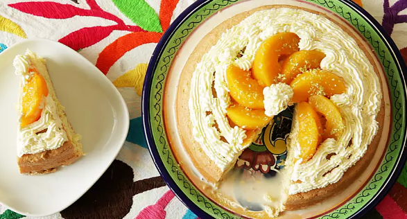

Mexican Tres Leches Cake

Ingredients
- 1 tablespoon butter
- 1 tablespoon all-purpose flour
- 6 eggs, separated
- ½ cup white sugar, divided
- 1 cup self-rising flour
- 1 lime, zested
- 1 (14 ounce) can sweetened condensed milk
- 1 (12 ounce) can evaporated milk
- 1 cup heavy whipping cream
- 1 teaspoon amaretto liqueur
Steps
- Preheat oven to 350 degrees F (175 degrees C). Butter and flour a 9-inch springform pan.
- Beat egg whites in a glass, metal, or ceramic bowl until foamy. Gradually add 1/4 cup sugar, continuing to beat until stiff peaks form. Clean beaters.
- Beat egg yolks in a separate bowl until creamy. Add remaining 1/4 cup sugar and continue beating until pale yellow. Fold egg yolks into egg white mixture using a spatula. Sift in flour and carefully fold into the batter; mix in zest of 1 lime. Pour batter into the prepared springform pan.
- Bake in the preheated oven until edges pull away from the sides of the pan, about 30 minutes. Turn off oven but keep cake in the closed oven for an additional 20 minutes.
- Prepare the '3 milks' while cake is resting in the oven. Combine condensed milk, evaporated milk, 1 cup heavy cream, and amaretto liqueur in a blender; blend until well combined.
- Remove the cake from the springform pan and and place on a serving plate. Pierce the cake several times across the top with a fork. Pour the '3 milks' mixture over the cake. Refrigerate cake until cool and milk mixture has soaked in, about 1 hour.
- Beat 1 cup heavy cream in a chilled glass or metal bowl with an electric mixer until soft peaks form. Garnish the top of the cake with whipped cream, peach slices, and 1 teaspoon lime zest.